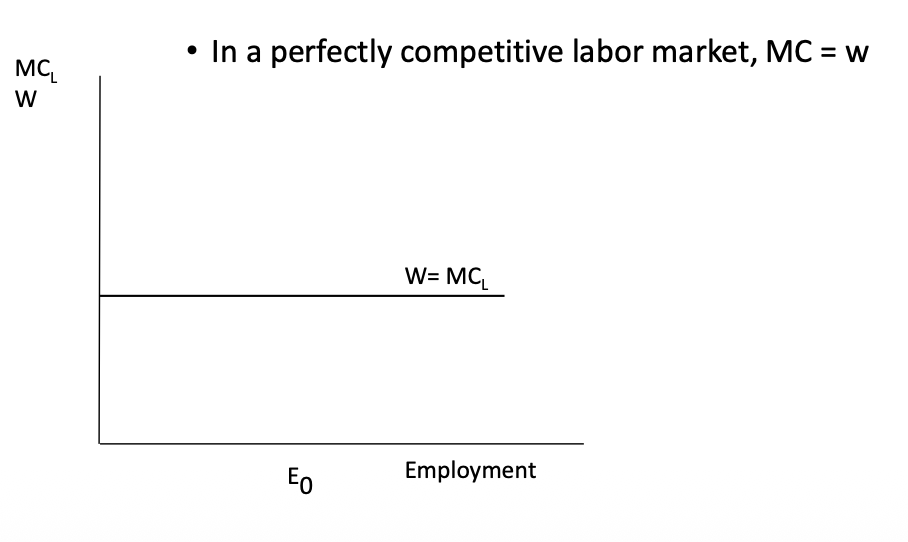
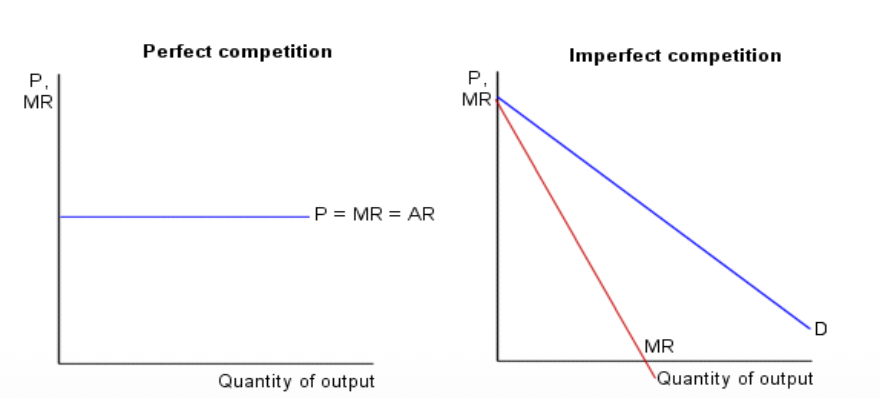
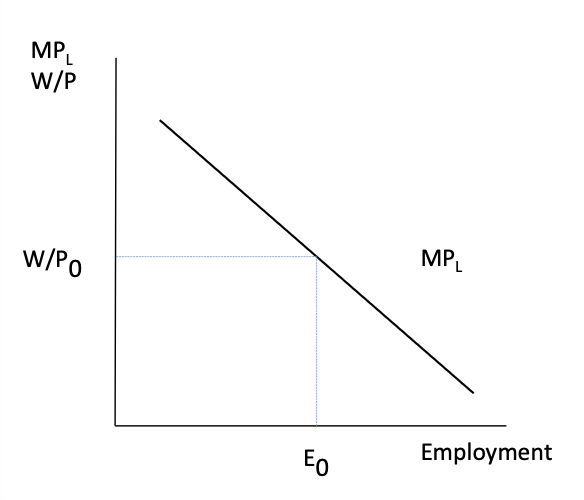
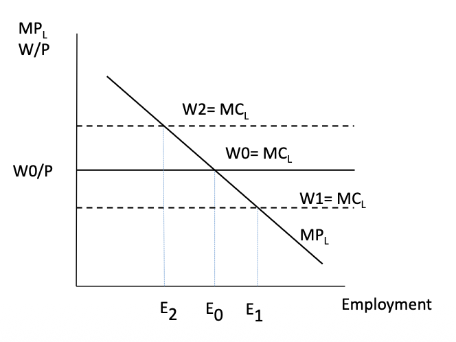
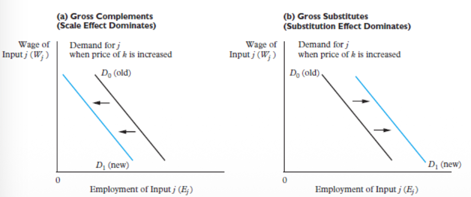
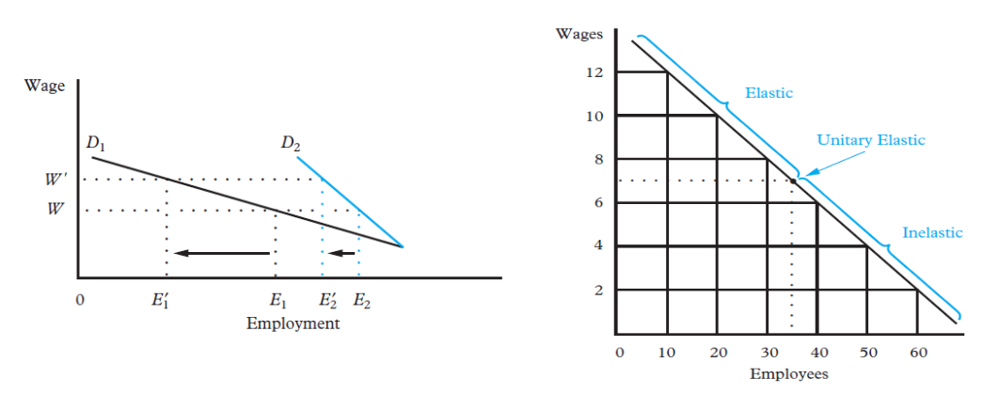
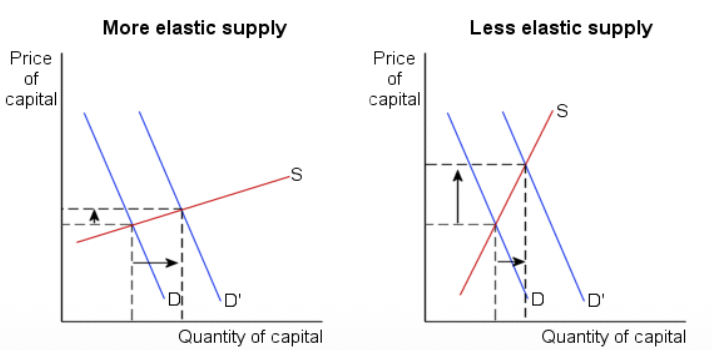
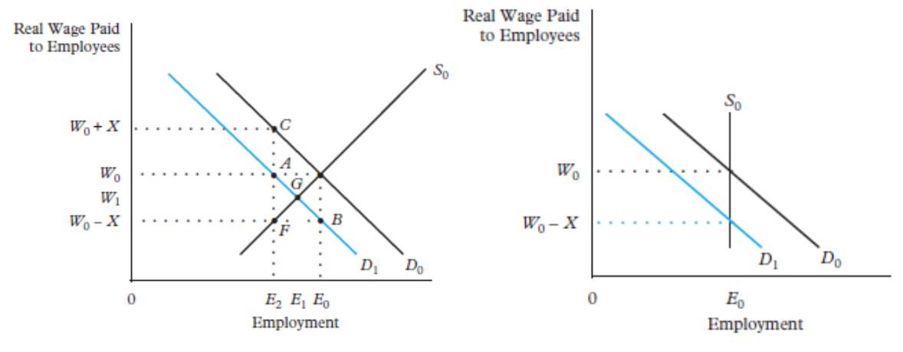

The Microeconomics of Labour Demand
⏱️ I. Short-Run Labour Demand (SRLD)
In the short run, capital ($K$) is fixed. The firm can only vary the amount of labour ($L$) it employs to adjust its production.
1. The Decision Rule: Marginal Analysis
Derived Demand and Marginal Analysis
Labour demand is a Derived Demand. This means that a firm does not hire workers for the simple pleasure of hiring, but only because there is demand for the final product that these workers will manufacture.
To know how many workers to hire, the firm (which always seeks to maximize its profit) uses marginal analysis. The central idea is to compare what an additional worker brings in (Total Revenue - $TR$) against what they cost (Total Cost - $TC$).
- Marginal Revenue Product ($MRP_L$): This is the direct additional revenue brought by hiring one more worker. It is calculated by multiplying the marginal productivity ($MP_L$) by the marginal revenue generated ($MR$). In a perfectly competitive market, the marginal revenue is simply the product price ($P$). Therefore $MRP_L = MP_L \times P$.
- Marginal Cost of Labour ($MC_L$): This is the additional cost associated with hiring that exact same worker. In a competitive labor market, the firm is a "wage taker", meaning this marginal cost is strictly equal to the wage ($W$).
2. Profit Maximization Conditions
The firm follows a very strict optimization rule:
- If $MRP_L > MC_L$: The worker brings in more than they cost. The firm must continue hiring to increase its total profit.
- If $MRP_L < MC_L$: The worker costs more than they bring in. The firm is destroying value and must purge (fire) or use less labor.
The perfect equilibrium, where profit is maximized, is reached exactly at the point where:
Which, in a competitive product market ($MR = P$) and a competitive labor market ($MC_L = W$), translates to:
\[ P \times MP_L = W \implies MP_L = \frac{W}{P} \]
This means that the firm hires up to the point where the marginal productivity of labor equals the real wage.
Graph: Marginal Cost Structure ($MC_L$)

Graph: Marginal Revenue Product ($MRP_L$)

3. The Marginal Product Curve ($MP_L$)
The Law of Diminishing Returns
Why does the $MP_L$ curve always end up sloping downwards? This is because in the short run, capital ($K$) is fixed (premises, machines, number of computers, etc.).
If new workers are continuously added to a factory of a fixed size, each additional worker will have less equipment or space to work with than the previous one. Their personal marginal productivity will therefore inevitably decline. It is for this reason that the firm never hires infinitely and always positions itself on the downward-sloping part of the demand curve.
Graph: The Marginal Product ($MP_L$) Curve

Graph: Short-Run Labour Demand

🏗️ II. Long-Run Labour Demand (LRLD)
In the long run, the scenario changes radically: BOTH labor ($L$) AND capital ($K$) are variable. The firm has the time to completely overhaul its production model and choose the optimal mix of inputs based on their relative prices.
1. Cost Minimisation and Profit Maximization
To maximize its long-term profits, the firm constantly adjusts its quantities of labor and capital to respect a golden rule: the marginal cost of producing one additional unit must be strictly the same, whether an extra worker or an extra machine is used.
If we set $W$ as the wage and $C$ as the cost of capital:
- $W / MP_L$ represents the cost of one additional unit of output if it is obtained by hiring labor.
- $C / MP_K$ represents the cost of one additional unit of output if it is obtained by investing in capital.
At equilibrium, the firm adjusts its capital and labor such that these incremental costs are constant and perfectly equal to the selling price of the product ($P$).
2. Responses to a Wage Hike ($\uparrow W$)
What happens if wages suddenly increase? The equilibrium is broken: $\frac{W}{MP_L} > \frac{C}{MP_K}$. Producing by adding employees suddenly becomes more expensive than producing with machines. The firm will thus react via two simultaneous mechanisms to restore equilibrium (and offset the hike in $W$ by an increase in $MP_L$):
Substitution Effect
($\downarrow L, \uparrow K$)
The firm substitutes labor, which has become too expensive, with capital, which has become relatively cheaper in comparison (e.g. installing self-checkout machines instead of cashiers). The quantity of labor decreases, and that of capital increases, without necessarily changing the total quantity of goods produced initially.
Scale Effect
($\downarrow L, \downarrow K$)
The wage hike has irremediably increased the firm's total and marginal cost of production. Consequently, the firm increases its selling price, which reduces consumer demand. The optimal overall production level decreases. Faced with this contraction, the firm reduces the use of all its factors of production: fewer humans and fewer machines.
Graph: Substitution vs. Scale Effects in the Long Run

3. Labour Demand When the Product Market Is Not Competitive
When a firm has market power (monopoly/oligopoly), it faces a downward-sloping demand curve and must lower its price to sell more. This means $MR < P$, which directly affects how many workers it hires.
✅ Perfect Competition
Price taker → $MR = P$
⚠️ Market Power (Monopoly)
Price maker → $MR < P$
📉 Consequences for Employment
In perfect competition, one extra worker produces output sold at price $P$, so the firm earns $P \times MP_L$.
In a monopoly, the firm must lower its price to sell more — so $MR < P$, and the same worker now only brings in:
→ At any given wage, the firm hires fewer workers. The labour demand curve lies below and to the left of the competitive curve.
The monopolist deliberately restricts output to keep prices high. Less output means fewer workers are needed.
Lower output → lower labour demand → lower employment.
The wage does not necessarily change. The firm may still be small in the labour market and simply take the going wage as given.
The problem is not that the firm controls wages — it is that it has market power in the product market. The distortion is entirely on the output side.
💡 Key idea: The monopoly hires fewer workers — not because it underpays, but because it restricts production to keep prices high.
🔗 III. Labour Demand Elasticities
Elasticity measures how mathematically sensitive employment is to wage changes.
1. Own-Wage Elasticity ($\eta$)
Elastic vs. Inelastic Payroll Impact
$|\eta| > 1$ (Elastic): Total payroll ($W \times L$) falls if wages rise. (The massive loss in jobs outweighs the higher wage for survivors).
$|\eta| < 1$ (Inelastic): Total payroll rises if wages rise. (Few jobs are lost, so the higher wages dominate the total payroll).
Graph: Elastic vs. Inelastic Labour Demand comparison

2. Cross-Wage Elasticity
Measuring Inter-Input Relationships
While own-wage elasticity measures how employment of input $j$ responds to its own price, cross-wage elasticity measures how the demand for input $j$ responds to a change in the price of another input $k$:
$\eta_{jk} > 0$: Gross Substitutes
When the price of input $k$ rises, the demand for input $j$ increases. The Substitution Effect dominates the Scale Effect.
Example: If capital becomes more expensive, the firm replaces some machines with workers → $L^d$ increases.
$\eta_{jk} < 0$: Gross Complements
When the price of input $k$ rises, the demand for input $j$ decreases. The Scale Effect dominates the Substitution Effect.
Example: If energy prices soar, firms cut production entirely → demand for both energy and labour falls.
⚠️ Important Distinction
Gross substitutes/complements (net result of both effects) are different from substitutes/complements in production (which only refer to whether inputs can technically replace each other in the production function). Two inputs can be complements in production but gross substitutes if the substitution effect through price changes dominates.
3. The Hicks-Marshall Laws of Derived Demand
Labour demand is more elastic (firms will fire more readily when wages rise) when:
Labour demand is called "derived demand" because it depends directly on the demand for the final product and the technological characteristics of production. The 4 Hicks-Marshall laws technically explain under what conditions this labour demand is very elastic (i.e. employment will drop sharply if wages rise).
First Hicks-Marshall Law: Product Demand Elasticity
The elasticity of labour demand is higher the more elastic the demand for the final product is.
This law operates through the Scale Effect. The logical sequence is as follows:
- A wage increase mechanically leads to an increase in the firm's average and marginal costs of production.
- To maintain profitability, the firm will pass this cost increase onto the selling price of the final product.
- However, if consumers are very sensitive to price (very elastic product demand), they will sharply reduce their purchases.
- This sudden drop in sales forces the firm to reduce its overall production over time, and consequently to massively reduce its volume of inputs (including labour).
Second Hicks-Marshall Law: Input Substitutability
The elasticity of labour demand is higher the easier it is to substitute other factors of production (like capital or machines) for this type of labour.
This law operates through the Substitution Effect.
If technology allows a task to be easily automated, or if the workforce can be replaced, firms will react very strongly to any wage increase by buying machines or modifying their production methods. This is notably where the influence power of Trade Unions resides: if the work of their members is difficult to substitute, their wage demands will cause fewer job destructions, thus giving them more bargaining power.
Third Hicks-Marshall Law: Supply Elasticity of Other Factors
The elasticity of labour demand is higher when the supply of other factors of production is highly elastic to price.
Like the second law, this phenomenon operates through the Substitution Effect.
Even if a firm wants to replace workers who have become too expensive with machines, it can only do so if the machine market manages to meet this new demand without the price of machines skyrocketing. If the supply of machines is very inelastic (their production bottlenecks, the price of robots doubles as soon as they are demanded!), the firm will abandon the substitution because capital will have become too expensive as well. The elasticity of employment thus depends on the "docility" of alternative markets (capital) to supply at a constant price.
Fourth Hicks-Marshall Law: Labour Cost Share
The elasticity of labour demand is higher the larger the share of labor costs in total production costs.
This law acts through the Scale Effect, in a similar way to the first law:
- If the category of workers concerned represents 80% of a firm's expenses, a 10% wage increase dangerously explodes the average and marginal costs.
- The firm is forced to pass this on massively to its selling price.
- Consumer demand will drop drastically because of this new very high price, which leads to a massive reduction in sales.
- Consequently, production is slowed down, and the firm cuts its workforce. Conversely, if the wage of these workers represents only 1% of the final costs of a complex product, doubling their wage will have almost no impact on the final price!
Third Hicks-Marshall Law: More Elastic vs. Less Elastic Supply of Other Factors

4. Which Industries Have Highly Elastic Labour Demand?
Labour demand is more elastic when: (1) labour is easily substitutable with capital, (2) labour costs form a large share of total costs, (3) product demand is highly elastic, and (4) adjustment is possible in the medium to long run. Industries combining several of these features show very elastic labour demand.
| Industry | EU Examples | Key Mechanism | Elasticity |
|---|---|---|---|
| Manufacturing | Automotive (DE, CZ, SK), Electronics, Textiles | Automation, capital substitution, elastic product demand | High |
| Tradable Services | Shared service centres, IT outsourcing | Offshoring, wage arbitrage, labour is large cost share | High |
| Low-skill/Routine | Warehousing, call centres, food processing | Technology substitution (automation, AI) | High |
| Healthcare | Hospitals, elderly care | Labour hard to substitute, inelastic output demand | Low |
| Education | Schools, universities | Labour-intensive, complements capital | Low |
| Public Admin | Civil service, public safety | Non-market, rigid staffing rules | Low |
Note: Manufacturing elasticity differs between SR (low — fixed capital) and LR (high — firms invest in automation, robotics, process redesign). Wage convergence in CEE gradually shifts elasticity upward.
🇪🇺 IV. Empirical Examples: EU Context
1. Comparative Statics: CEE vs. Western Europe
The elasticity of labour demand is not a fixed constant per sector. It depends on relative factor prices, technology, and economic openness! Although Eastern Europe (CEE) and Western Europe operate under the same neoclassical logic of labour demand, their adjustment trajectories differ radically:
- Lower wages (CEE): Implies a weaker substitution effect (machines are still too expensive compared to humans). Result: labour demand is less elastic.
- Wage convergence: As Eastern wages catch up with Western ones, elasticity mechanically increases.
- Trade openness and Offshoring: Exposure to international competition makes the demand for the final product much more elastic, which, through the "scale effect" (1st Hicks-Marshall law), makes labour demand more elastic.
2. The Payroll Tax Wedge
The Tax Wedge Distortion
Taxes create a massive difference between what the firm actually pays (Gross Cost, shifting MC_L up) and what the worker receives in their pocket (Net Wage). This "wedge" destroys mutually beneficial trades, reducing total employment. (As seen in Slide 28).
Graph: The Distortive Impact of the Payroll Tax Wedge

3. Automation Threshold: Germany vs. Czechia (2023)
Let's take a striking numerical example in the manufacturing sector:
- Hourly labor cost ($W$): Germany = 46.0 €/h | Czechia = 18.5 €/h. (Ratio of 2.49). For the same $MRP_L$, a higher wage implies that far fewer workers will be hired (we move up along the demand curve).
- Automation Intensity (Robot Density): Germany = 429 robots/10,000 employees | Czechia = 207 robots/10,000 employees. (Ratio of 2.07). High wage costs increase the profitability of investments in robots (Capital), making long-run labour demand much more elastic in Germany!
The German Calculation
Imagine an automated system costs 30 €/h to run. In Germany, firing a human to install this robot saves: 46.0€ - 30€ = 16.0 € earned per hour! The firm will substitute massively (High Elasticity).
The Czech Calculation
In Czechia, the same machine also costs 30 €/h. But the human only costs 18.5 €/h. Making the switch would cost: 18.5€ - 30€ = -11.5 € per hour (net loss). The firm keeps its humans. The demand for labour is therefore inelastic to technology (weak substitution effect).
💡 Exam Tip : High Wages & Elasticity
Conclusion: High-wage countries naturally have more elastic long-run labour demand. Any further wage hike in Germany immediately triggers automation, whereas a similar hike in Czechia might not cross the "automation threshold" yet.
📊 V. Expanded Empirical Evidence (2024–2025)
The lecture notes provide 7 specific EU empirical developments that illustrate labour demand theory in action:
1. Persistent Labour Shortages & Job Vacancies
In 2024–2025, most EU countries reported high vacancy rates in healthcare, engineering, IT, construction, and technical trades. Firms are willing to hire (high $L^d$) but cannot find suitable workers.
Neoclassical interpretation: The $MRP_L$ in these sectors remains high relative to the wage, but labour supplied at that wage is insufficient. This can be modelled as an outward shift of $L^d$ or a leftward constraint on $L^s$ due to demographic change. Wage rigidity or skills mismatch prevents market clearing.
2. Skill Mismatches & Labour Market Polarisation
EU labour markets are experiencing polarisation in demand: demand for high-skilled workers (ICT, engineering, healthcare) grows, while middle-skill jobs stagnate or decline.
Interpretation: Technology raises $MP_L$ for certain skill types, shifting their demand curves outward. Sectoral $L^d$ curves for high vs. low-skill workers move in opposite directions — technological change reshapes labour demand.
3. Automation & Technology Adoption
Technological adoption (robotics, process automation) reduces demand for routine work and raises demand for higher-skilled labour.
Interpretation: Technological change increases $MP_K$ relative to $MP_L$ in some tasks, reducing $L^d$ for routine jobs but increasing $L^d$ for complementary high-skill roles.
4. Demographic Change & Labour Supply Constraints
The working-age population in the EU has flattened or declined due to ageing, exerting upward pressure on wages.
Interpretation: A shrinking $L^s$ = leftward shift of the supply curve. For a given $L^d$, this raises the equilibrium real wage and potentially reduces employment if $L^d$ is relatively elastic. Firms resort to automation or offshoring as replacement strategies.
5. Labour Mobility & Migration
Labour mobility within the EU and immigration from outside have eased shortages. The share of working-age population born outside the EU rose markedly.
Interpretation: Immigration increases $L^s$, shifting the supply curve outward. This can lower equilibrium wages in the short run and increase total employment in shortage sectors. Migration can offset demographic constraints.
6. Sectoral Reallocation & Restructuring
Firm downsizing or closures in manufacturing continue with job losses in some industries and creation in others.
Interpretation: When an industry declines (e.g., due to global trade pressures), the value of $MP_L$ falls, leading firms to reduce $L^d$. Labour demand is derived from marginal productivity and responds to changes in output demand.
7. EU Adequate Minimum Wage Directive (2022)
The EU's directive encourages member states to set or adjust minimum wages, affecting the real cost of labour and firms' hiring decisions, particularly at the low end.
Interpretation: A binding minimum wage above the competitive equilibrium can create excess supply of labour (unemployment) according to standard theory, particularly for low-skill workers. The impact depends on the firm's ability to substitute capital for labour and on labour market frictions.